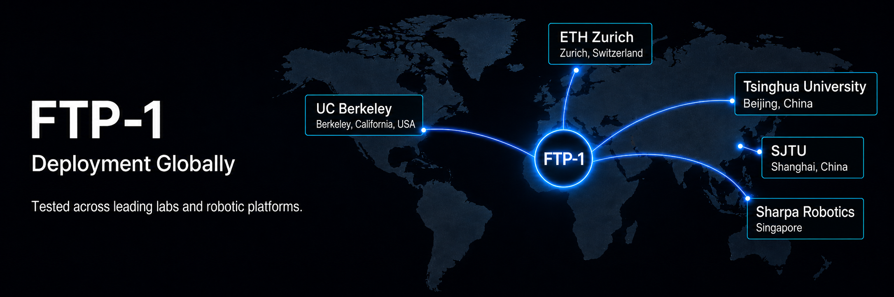
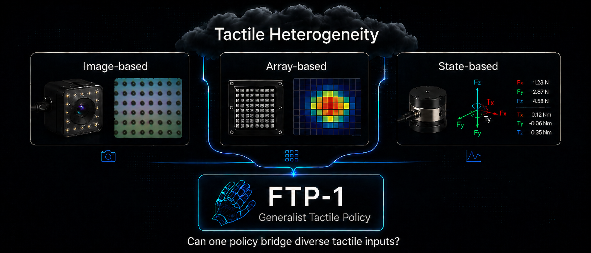
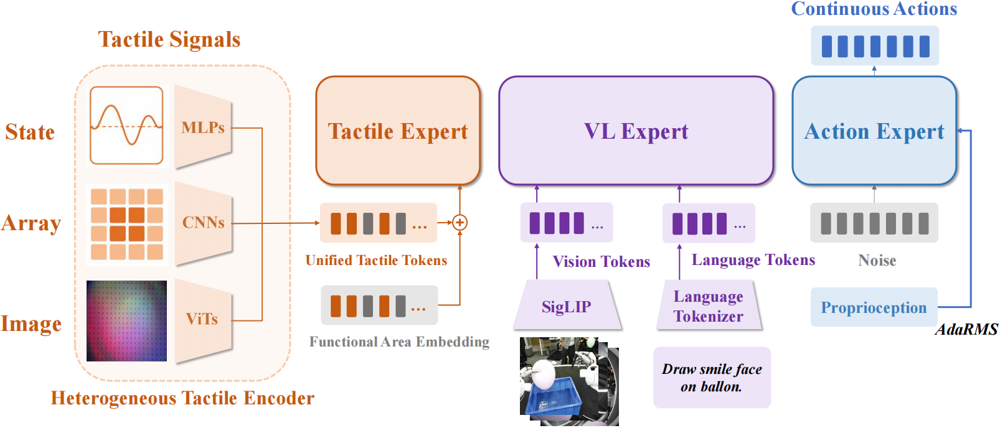
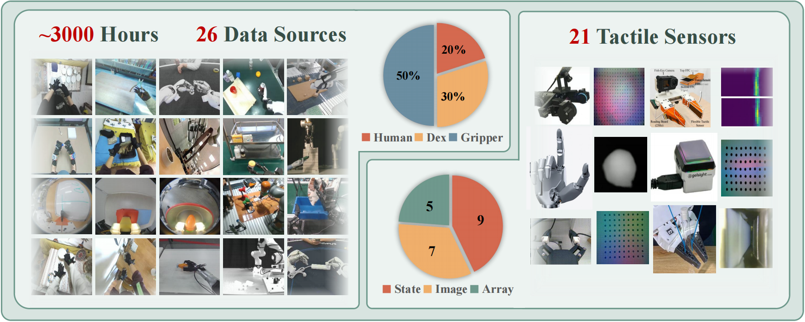
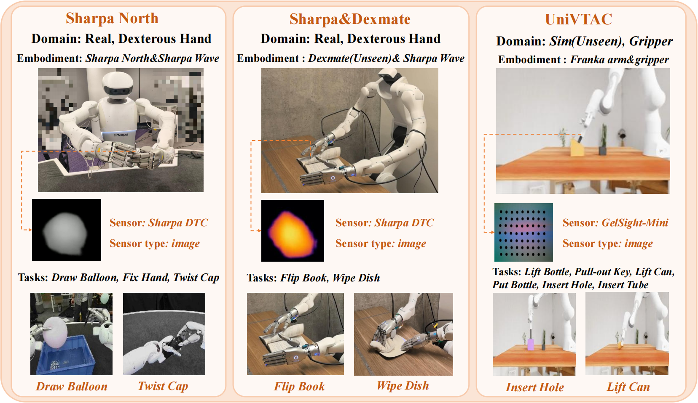
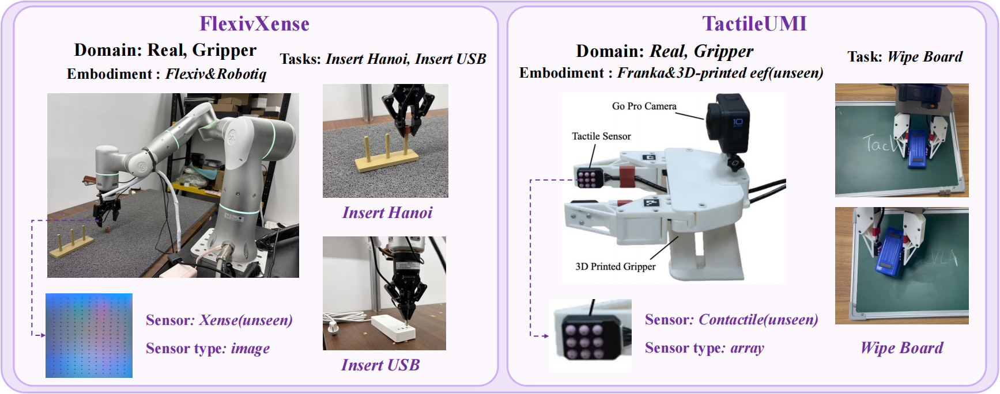

Blog
FTP-1: A Generalist Foundation Tactile Policy
Across Tactile Sensors for Contact-Rich Manipulation
1Tsinghua University 2Shanghai Qi Zhi Institute 3Sharpa 4Shanghai Jiao Tong University 5University of California, Berkeley 6ETH Zurich 7Fudan University 8Shanghai Innovation Institute *Equal contribution ‡Project leader †Corresponding author
Highlights
We introduce FTP-1, the first Generalist Foundation Tactile Policy designed to learn transferable tactile manipulation skills across diverse sensors, embodiments, and real-world tasks. FTP-1 brings the generalist policy paradigm to tactile sensor-based manipulation for the first time, enabling a single pretrained policy to adapt across heterogeneous tactile inputs and robotic platforms.
By “generalist, we mean:
- Sensor-general: FTP-1 supports a wide range of tactile sensing modalities, including image-based, array-based, and state-based tactile sensors.
- Data-scaled: FTP-1 is pretrained on approximately 3,000 hours of large-scale, heterogeneous tactile manipulation data, spanning human demonstrations, dexterous hands, and gripper-based robots.
- Embodiment-transferable: FTP-1 can be fine-tuned across diverse sensors and robot embodiments, and can even transfer to unseen sensors and platforms with measurable performance gains.

FTP-1 has been tested across leading institutions worldwide, including Sharpa, UC Berkeley, Tsinghua University, ETH Zurich, SJTU and beyond—demonstrating strong performance across a wide range of robotic platforms and tactile sensing setups. Now, we’re opening the door for the broader community to evaluate FTP-1 on diverse sensors, embodiments, and real-world manipulation challenges.

The Dark Cloud Over Generalist Policy: Tactile Heterogeneity
Recent vision-based foundation policies, such as π0.5 and GR00T N1.5, have shown that pretraining on large, diverse datasets can produce general-purpose policies that serve as strong initialization points for downstream robotic manipulation. Yet bringing the same paradigm to tactile manipulation remains challenging, even though tactile feedback is often essential for contact-rich tasks. When training a new tactile manipulation policy today, we quickly run into a fundamental gap: unlike vision-based manipulation, tactile manipulation still lacks a broadly reusable, foundation-level pretrained policy that can be used out of the box and adapted to new sensors, embodiments, and tasks.
But a dark cloud hangs over the path toward generalist tactile policy: tactile heterogeneity. Across robotic platforms, tactile observations can vary dramatically in modality, spatial resolution, sensor morphology, and contact response. A GelSight-Mini image, a Contactile tactile array, and a six-axis force/torque reading all encode touch, but in fundamentally different formats. As a result, most existing tactile policies are tightly coupled to a single sensor, embodiment, or task setup. This makes it difficult to absorb tactile experience across systems, scale pretraining across heterogeneous data, or transfer learned skills to new tactile hardware.
FTP-1 asks a simple but fundamental question: Can one tactile policy learn from heterogeneous tactile experience and transfer to sensors and embodiments beyond those seen during pretraining?

FTP-1: Training Genearlist Tactile Foundation Policy
FTP-1 is a multi-expert foundation policy with a vision-language expert, an action generation expert, and a shared tactile expert that operates across sensors. Pretrained on large-scale heterogeneous tactile manipulation data, this tactile expert learns transferable touch representations that can be adapted to downstream sensors, embodiments, and tasks.
To make diverse tactile inputs compatible with a shared expert, FTP-1 introduces Morphology-Aware Tactile Token Space (MTTS): a unified interface that maps image-based, array-based, and state-based tactile observations into semantically aligned tactile tokens. These tokens are further augmented with functional-area embeddings, encouraging the policy to learn shared tactile semantics across similar regions of the end-effector, even when the underlying sensors differ. More details are provided in our technical report.

To pretrain FTP-1, we aggregate a new large-scale heterogeneous tactile manipulation dataset spanning 26 data sources and 21 distinct tactile sensors — 7 image-type, 5 array-type, and 9 state-type. To mitigate dataset imbalance, we apply source-specific sampling ratios so that the final pretraining mixture is approximately 20% human, 30% dexterous-hand, 50% gripper data. All tactile annotations are organized under the MTTS interface and language instructions are rewritten with GPT-4o for linguistic diversity. By pretraining on a these data, FTP-1 learns transferable tactile manipulation skills.
~3,000 hrs
Tactile manipulation data
26
Data sources
21
Tactile sensors
3
Sensor types

FTP-1 Improves Performance Across Familiar Tactile Setups
We first evaluate FTP-1 on tactile sensors and robotic setups represented in the pretraining mixture. These experiments cover both simulation and real-robot tasks, spanning dexterous manipulation, gripper-based contact control, and long-horizon physical interaction.
Across these settings, FTP-1 achieves the strongest average performance among baselines. It boost performance on tasks where success depends on sustained contact, force regulation, and tactile feedback such as twisting a bottle cap, flipping pages, wiping a dish, and drawing on a deformable balloon.

Simulation Benchmark
On UniVTAC, FTP-1 achieves the best average success rate across contact-rich manipulation tasks, improving over the strongest baseline by approximately +17.5%.
| Method | Lift Bottle | Pull-out Key | Lift Can | Put Bottle | Insert Hole | Insert Tube | Avg. | Avg. w/o Lift |
|---|---|---|---|---|---|---|---|---|
| VITaL | 72 | 47 | 8 | 32 | 25 | 34 | 36.3 | 34.5 |
| UniVTAC-ACT | 71 | 46 | 29 | 31 | 25 | 56 | 43.0 | 39.5 |
| π0.5 | 97 | 38 | 72 | 16 | 31 | 41 | 49.2 | 31.5 |
| Tactile-VLA | 97 | 32 | 15 | 10 | 41 | 56 | 41.8 | 34.8 |
| FTP-π0.5 | 77 | 30 | 26 | 19 | 47 | 72 | 45.2 | 42.0 |
| FTP-1 (Ours) | 97 | 48 | 65 | 47 | 64 | 79 | 66.7 | 59.5 |
Pull-out Key
Lift Can
Put Bottle
Insert Hole
Insert Tube
Real-Robot Contact-Rich Tasks
On real robots, FTP-1 improves over the strongest baseline by approximately +17.2%. The improvement is particularly visible in long-horizon and force-sensitive tasks, where tactile feedback helps the policy maintain stable contact and recover from small physical errors.
| Method | Draw Balloon | Fix Hand (Tear) | Fix Hand (Finish) | Twist Cap | Flip Book | Wipe Dish | Avg. |
|---|---|---|---|---|---|---|---|
| π0.5 | 35 | 70 | 35 | 40 | 65 | 30 | 45.3 |
| Tactile-VLA | 20 | 80 | 25 | 10 | 45 | 35 | 35.8 |
| FTP-π0.5 | 25 | 65 | 25 | 20 | 70 | 45 | 41.6 |
| FTP-1 (Ours) | 45 | 80 | 40 | 65 | 85 | 60 | 62.5 |
Real-Robot Demonstrations
Selected rollouts show FTP-1 performing contact-rich manipulation across dexterous hands, humanoid platforms, and gripper-based systems. These tasks require fine-grained contact regulation, sustained force control, and reactive adjustment under physical uncertainty.
Draw Balloon
A long-horizon dexterous task that requires deformable-object interaction, fine-grained contact control, and stable tactile feedback throughout the drawing process.
Twist Cap
A bimanual task requiring stable grip force, coordinated rotation, and tactile-regulated torque control across both hands.
Fix Hand
A dexterous task that requires tactile-aware contact maintenance and controlled force while repairing the hand model.
Flip Book
A page-flipping task that tests reactive contact under varying paper friction and tactile-aware fingertip force regulation.
Wipe Dish
A press-control task where FTP-1 maintains consistent force and tight contact with the surface, while vision-only baselines often lose contact.
More Importantly, FTP-1 Transfers to New Tactile Sensors
The more important test is whether FTP-1 can adapt to tactile sensors that were never seen during pretraining. If this happens, it means that FTP-1 learn transferable tactile manipulation knowledge rather than simply memorizing the pretraining distribution. We evaluate this by fine-tuning FTP-1 on new platforms equipped with unseen tactile hardware, including image-based (Xense) and array-based (Contactile) sensors.

Even when the sensor-specific encoder is trained from scratch, FTP-1 can reuse its pretrained tactile expert and morphology-aware token space and embeddings. This leads to a +31.6% improvement over the strongest baseline on unseen-sensor tasks. Beyond higher success rates, FTP-1 also exhibits contact-aware behaviors that are difficult to obtain from vision-only or weakly fused tactile baselines, such as slowing down when insertion misalignment is detected and maintaining stable contact force during wiping. We provide more experiments and details in our technical report.
| Method | Insert Hanoi | Insert USB | Wipe Board | Avg. |
|---|---|---|---|---|
| π0.5 | 25 | 0 | 20 | 15.0 |
| Tactile-VLA | 0 | 10 | 15 | 8.3 |
| FTP-π0.5 | 5 | 10 | 30 | 15.0 |
| FTP-1 (Ours) | 55 | 30 | 55 | 46.6 |
Insert Hanoi
FTP-1 slows down when tactile feedback indicates misalignment, showing reactive insertion control on a tactile sensor absent from pretraining.
Insert USB
A fine-grained insertion task where FTP-1 produces stable contact-aware motions, despite limited downstream demonstrations.
Wipe Board
A force-controlled wiping task where FTP-1 maintains stable pressure and continuous surface contact using an unseen array-based tactile sensor.
Toward Generalist Tactile Intelligence
FTP-1 takes a first step toward a generalist foundation tactile policy. By unifying heterogeneous tactile signals through a Morphology-Aware Tactile Token Space (MTTS) and a shared tactile expert, and by pretraining on approximately 3,000 hours of heterogeneous tactile manipulation data, FTP-1 provides a reusable starting point for contact-rich robot learning across sensors and embodiments.
Our results suggest that tactile pretraining can unlock transferable skills that are difficult to acquire from vision alone, including stable contact maintenance, force-aware manipulation, and reactive correction under physical uncertainty. FTP-1 remains an early step, but it offers an initial glimpse of the potential for learning generalist tactile policies. We hope this work opens a new perspective on tactile learning and encourages further exploration of scalable, transferable tactile intelligence. Read the full technical report.